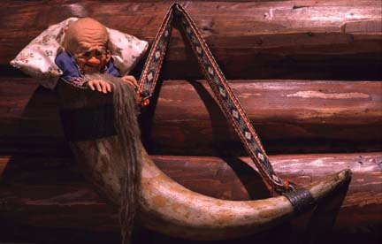

Race/ Class
DCC uses Race-as class. Which basically means that demi-human racial differences and cultural differences are integrated into a class. In DCC when you make a character you first roll on the occupation table(I made my own including a generator). A little over 60% of the occupations are human, at lvl1 those wil be able to choose a class. For the others the class is set. The races will be used as-is except for the halfling, who is a little hairy lad instead. Below is some lore on how demi-humans fit into the world.Humans, Nobility and Peasantry
Humans rule. Most people are humans. Humans can generally be placed in the following class structure (in order of respect):Nobles
Administrators
Warriors
Middle class: Craftsmen, Guards, Innkeepers
Farmers
Merchants (seen as leeches therefore below farmers)
Drifters


Dwarves, Shocktroops and Artisans
A long time ago, Dwarves were created as a servant race by the Elves. They turned on the Elves and conquered them alongside the humans. Dwarves now live among humans. Generally not overly ambitious or intelligent, they are happy to serve. They occupy their own caste in soceity focussing on either crafts or soldiery. Army divisions have Dwarven attachment forces that suffer the brunt of the casualties. Their origins are only vaguely remembered(except by the elves), out of shame of their origins or maybe pride of freeing themselves from the Elves over the ages dwarves have started writing their own origin myths(spawned from stone, descended from giants etc), these are widely believed among Dwarves.Dwarves care a great deal about shields, families have ancestral shields(1 or more) that are handed down the male line. Younger sons or outcasts have shameful crappy shields.
Dwarves reach fighting age at 8. Dwarves grow smaller as they age(when they reach 100 they shrink to the size of a small dog over seven days). The wisest dwarven elders are nothing more than small gnomes(3 STR, 3 HP).

Elves, Fallen Decadent and Strange Civilization, living in servitude
Elves don't believe they were overthrown by the other races, rather that they fell due to their own hubris. Most of them feel they lost the right to rule and are happy living in the shadow of man.Elves are completely sex-less, some may look more like a man or a woman from a human perspective. Others specifically shape their bodies to beguile humans.
Occupations: The effeminate elves mostly function as courtiers, courtisanes (fancy prostitutes), advisors and artists. Some Elves live like drifters in the wild.
Elves are feared and respected by commoners, not because they're really dangerous in daily life (if they do get bullied or attacked they're not likely to resist) but because they're likely to occupy important stations in society(close to power but never in power) and because of their inscrutable aura. Elves sometimes have irregur skin-tones. Commoners believe Elves get together at night and consort with devils.
Whenever an Elf dies a full grown tree sprouts from their corpse that night.


Monkeys
Monkeys occupy a special place on society. They're seen as untouchables, commoners are not allowed to hurt them. They're also seen as very good luck! They are not expected to do any work, they live on offerings. Monkey's are often lazy. Ambitious monkey's are rare but some have been able to exploit their holy status to obtain power and luxury.
There are many different kinds of monkeys, macaces, tamarins baboons(mean) etc.
[They mechanically just use the halfling class]